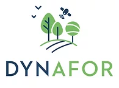

Projet ANR HIATUS 2019-2023
Historical Image Analysis for Territory evolUtion Stories
Analyse d'images aériennes historiques pour l'étude de l'évolution des territoires
Consortium
Le projet regroupe les partenaires suivants :
DYNAFOR
IGN / LASTIG
ICube